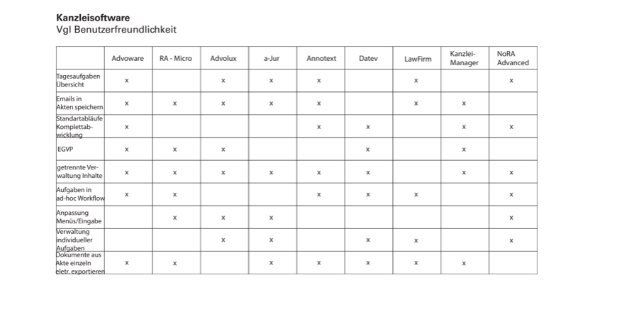

Was ist eine Präsentation?
Was ist ein System?
Was bedeutet vernetztes Präsentationssystem?
Welches Präsentationssystem kann verbessert werden?
Worin sehen wir Potential?
Da uns nicht klar war, wie weit der Begriff der Präsentation reicht, recherchierten wir zunächst in diese Richtung. Wir fanden heraus, dass uns im Laufe eines Tages unzählig viele Dinge präsentiert werden: Die Nachrichten in der Zeitung, Vorträge in der Universität, das Essen auf dem Teller eines Restaurants. Denn die Definition von Präsentation ist; die Aufbereitung, Darstellung und Weitergabe verarbeiteter Information.
Auch der Begriff des Systems wurde im Rahmen der ersten Recherche definiert. Wir nahmen die Definition, ein System sei ein aus mehreren Einzelteilen zusammengesetztes Ganzes, an. Im Zusammenhang des Präsentationssystems bedeutete dies für uns die Berücksichtigung und Kombination der Faktoren (Inhalt, Medium, Empfänger, Kontext) in eine ganzheitliche Dar-/Vorstellung/Weitergabe von Information.
Nachdem wir alle Begriffe definiert haben, starteten wir mit klarer Basis die Suche nach einem Thema. Dazu schrieben wir in einem Brainstorming alle Präsentationen, die uns einfielen, auf Post-Its. Wichtig war uns bei Anwendung dieser Methode, erstmal jeden Einfall von klassischen Präsentationen, welche man von Beruf, Schule und Veranstaltungen kennt bis zur Präsentation von Essen in Suppenküchen in die Sammlung aufzunehmen, um später eine Auswahl aus einem großen Pool an Ideen treffen zu können. Die Post-Its filterten wir in einem nächsten Schritt zunächst nach Interesse. Die Themen, die uns spannend schienen, sortierten wir dann nach Potential. Diese Einschätzung basierte auf einer kurzen Recherche zu jedem Thema. Wir reduzierten die Anzahl der möglichen Wege auf drei: Apotheke, Kirche und Gerichtssaal. Da der persönliche Zugang zu Beteiligten und tatsächlichen Nutzern in diesem Projekt sehr wichtig war, versuchten wir zunächst für alle drei Themen Stakeholder zu sammeln, Ansprechpartner zu recherchieren und Interviewtermine zu finden. Wir wollten ein tatsächliches Gestaltungspotential auftun und herausfinden, ob es im Alltag der Beteiligten Schwierigkeiten und Probleme gibt. Für das Thema Gericht stellten wir Flyer zusammen und gaben diese an das Amtsgericht Schwäbisch Gmünd, in der Hoffnung einige Ansprechpartner zu finden.
Letztlich stellten wir nach einem Interview mit einem Jurastudenten und Internetrecherche zum aktuellen Stand fest, dass die Digitalisierung des Justizwesens die größte gestalterische Spielwiese unserer Auswahlthemen ist. Ein wichtiges Statement für uns war insbesondere, dass die Digitalisierung am Gericht nur langsam voran ginge und das Papier weiterhin die vorherrschende Macht sei. Da es sich beispielsweise bei der e-Akte um ein Projekt handelt, welches zurzeit tatsächlich bearbeitet und umgesetzt wird, ist es relevant und noch sehr offen.
Was macht das deutsche Justizsystem aus?
Welche Stakeholder gibt es im Gerichtsprozess?
Wie laufen Verhandlungen ab?
Welche Arten von Verhandlungen gibt es?
Wo beginnt die Arbeit der Beteiligten, wo endet sie?
Was ist eine Akte?
Zunächst recherchierten wir einige Grundlagen des deutschen Justizsystems. Uns interessierte, welche Arten von Verhandlungen, Arbeitsabläufen, Berufen und Zuständigkeiten es im juristischen Bereich gibt. Wir fanden heraus, dass grundsätzlich zwischen Straf- und Zivilverfahren unterschieden wird. Die Abläufe der jeweiligen Prozesse visualisierten wir in Grafiken. Die Abbildung der Stakeholder überarbeiteten wir und zeichneten Kommunikationswege und Beziehungen ein.
Interessant fanden wir die Rechercheergebnisse um die Urteilsbildung. In ein Urteil fließen neben der Gesetzeslage und Vorstrafen verschiedene Faktoren ein, etwa die Reue, das Aussehen und das Auftreten des Angeklagten, der Mitgefühlgrad des Richters und die Tageszeit. Die menschliche Komponente spielt dabei zu unserer Überraschung eine große Rolle. Über eine Studie (https://www.pnas.org/content/108/17/6889) fanden wir heraus, dass insgesamt 64 Prozent der Bewährungsanfragen abgelehnt werden. Falls diese jedoch zu Tagesbeginn oder direkt nach einer Mahlzeit abgehandelt wurden, stieg der Prozentsatz leicht an. Auch die Anzahl der Entscheidungen, die der Richter an einem Tag bereits treffen musste, beeinflusste weitere Urteilsfindungen. Insbesondere im Strafrecht hat der Richter einen gewissen Entscheidungsspielraum.
In unserer Recherche fanden wir heraus, dass eine Gerichtsakte im Prinzip nichts Anderes als die Sammlung aller Dokumente einer Angelegenheit ist. Basisinformationen, wie etwa der Name des Gerichts, das Aktenzeichen, und die Namen der Beteiligten, sind auf dem Aktenumschlag bzw. dem -vorblatt zu erkennen. Die Reihenfolge der Dokumente wird durch den Eingangszeitpunkt (vorne nach hinten) festgelegt. Eingehende Dokumente und Schriftgüter sind immer sofort einzuheften. Alle Angaben sind auf dem aktuellen Stand zu halten und für alle Parteien zur Einsicht verfügbar.
Wie sieht die aktuelle Situation aus?
Welche Probleme kommen insbesondere in Gerichtssälen auf?
Mit welchen Emotionen stehen Juristen der digitalen Transformation entgegen?
Welche Nutzergruppen gibt es?
Was beschäftigt die Nutzergruppen?
Welche Wünsche, Sorgen und Ängste haben sie?
Um uns einen eigenen Eindruck der aktuellen Situation zu machen, besuchten wir viele verschiedene öffentliche Gerichtsverhandlungen. Während der Verhandlungen in Gerichten in Schwäbisch Gmünd, Ellwangen und Stuttgart machten wir uns Notizen, skizzierten problematische Situationen und werteten diese aus. Wir besuchten unterschiedliche Arten von Prozessen in Gerichten unterschiedlicher Größen, um eine große Bandbreite gesehen zu haben. Wir legten unseren Fokus der Beobachtung unter Anderem auf die Arbeitsabläufe, die technische Ausstattung der Räume und die Kommunikation zwischen den Parteien. Die Aussage unseres ersten Interviewpartners wurde bestätigt: Der Großteil der kleinen Verhandlungssäle war technisch dürftig ausgestattet und die Technik, die vorhanden war, wurde kaum genutzt. Teilweise wurden Dokumente lange gesucht oder es war für Parteien unklar, welches Dokument diskutiert wird. Für das Vorführen von Beweisstücken wurden die Parteien gebeten, an das Richterpult zu treten. Insgesamt wurde fast ausschließlich mit Papier gearbeitet: Akten, Dokumente, Beweisfotos, Notizen,… In den Verhandlungen begegneten uns sowohl auf Seite der Anwälte, als auch auf der der Richter, Berge von Papierakten. Die Arbeitsabläufe waren in den meisten Fällen dennoch klar und liefen, wenn auch mit zeitweiser Verzögerung, flüssig ab.
Auffällig war, dass Nicht-Juristen als Angeklagte häufig nicht ihre Rechte kannten und ihnen die Gesetzeslage, sowie der Ablauf der Verhandlung meist unbekannt war. Sie sind auf das Mitgefühl und die Erklärungen des Richters angewiesen, der jedoch nicht dazu verpflichtet ist, Auskunft zu geben.
Interessant fanden wir die Aufgabe der Protokollführung: Ein Protokollant tippte manchmal den kompletten Ablauf eines Prozesses auf einem Computer mit. Dies musste immer in schneller Geschwindigkeit passieren. Aus diesem Grund, das fanden wir in einer der Befragungen heraus, seien manchmal Fehler im Protokoll zu finden. War kein Protokollant anwesend, insbesondere bei kleineren Fällen, nahm der Richter das Urteil mit einem Diktiergerät auf.
Parallel stießen wir im Laufe unserer Recherche auf eJustice. Dabei handelt es sich um einen Zusammenschluss aus Richtern, Staats- und Rechtsanwälten, die sich im Thema Digitalisierung des Gerichts engagieren. Sie arbeiten hauptsächlich an den Themen elektronische Akte, Präsentation von Inhalten und Raumkonzept. Hintergrund ist die teilweise verpflichtende Einführung der elektronischen Kommunikation mit den Gericht seit 2011. Bis 2026 soll die elektronische Akte eine Arbeitsplatzsituation schaffen, in der die Papierakte nicht mehr in ihrer heutigen Rolle existent ist. Rechtlich verpflichtend ist dann ausschließlich die elektronische Akte. Der Vorteil der elektronischen Akte ist unter Anderem, dass alle Informationen an einem einzigen Ort gespeichert sind. Die Ortsunabhängigkeit und kontinuierliche Verfügbarkeit ist ein weiterer großer Vorteil: Jeder mit entsprechender Berechtigung hat zu jeder Zeit Zugriff auf die Inhalte der Angelegenheit. Zudem sind digitale Dokumentensammlungen sicherer vor Manipulation und Eingriffen von Außen. Es soll eine bessere Kommunikation zwischen den Parteien ermöglicht und die Effizienz gesteigert werden. Compliance Probleme, wie Aufbewahrungs- und Löschfristen, werden gelöst und insgesamt kann man von einem Vorteil im Bereich Platz und Kosteneinsparung sprechen. E-Akten sind in der Praxis derzeit nur an einzelnen Gerichten in Pilotprojekten eingeführt, etwa dem Arbeitsgericht und Finanzgericht in Stuttgart.
Wir schauten uns die teilnehmenden Gerichte an und besuchten auch dort mehrere Verhandlungen. Wieder machten wir uns Skizzen und notierten Auffälliges und Fragen. Die Räume waren technisch besser ausgestattet, meist mit Fernseher, Beamer und mit mindestens einem bis mehreren größeren Bildschirmen. Genutzt wurde die Ausstattung jedoch sehr selten und wenn, dann waren es meist die Bildschirme, welche kurz Verwendung fanden. Nach den Verhandlungen konnten wir die Richter und Anwälte häufig zu einem Interview gewinnen, in dem sie uns offen von ihren Erfahrungen mit der elektronischen Akte und ihrer Meinung zur Digitalisierung der Justiz erzählten. Insgesamt stellten wir eine große Vorsicht und Skepsis gegenüber der Digitalisierung fest. Insbesondere ältere Richter berichteten von Berührungsängsten und dass die Umstellung schwierig sei: Sie würden lieber mit Papier arbeiten, weil sie diesen Arbeitsablauf routiniert haben. Jedoch müsse man sich mit der Situation arrangieren, da die elektronische Akte bald verpflichtend sei. Eine gewissen Vorfreude, bald keine Aktenkoffer mehr schleppen zu müssen, schwingte jedoch auch immer mal wieder mit.
Um wirklich in die Welt der Juristen einzutauchen und tiefe Empathie zu entwickeln, führten wir neben den zahlreichen Beobachtungen viele Interviews. Dabei beschränkten wir uns nicht auf Richter, sondern sprachen auch mit Referendaren, Staatsanwälten und Rechtsanwälten verschiedener Fachbereiche und unterschiedlichen Alters. Uns interessierte, wie sie sich die Arbeitsabläufe organisieren, welche Aufgaben ihnen Spaß machen und besonders wichtig sind, wieso sie den Beruf ausüben, usw.
Die Interviews mit den Rechtsanwälten waren sehr interessant. Wir führten telefonische oder persönliche Interviews mit Anwälten, die alleine, in kleinen oder größeren Kanzleien arbeiteten und stellten dabei sowohl Gemeinsamkeiten, als auch Unterschiede fest. Wir teilten unsere Insights in drei Kategorien auf: Vorbereitung, Vernetzung, Organisation.
Betreffend der Vorbereitung eines Falles gewannen wir die Erkenntnis, dass jeder Anwalt (und auch Richter) nach Präzedenzfällen sucht. Diese Suche sei wohl schwierig, da es keine Datenbank gibt, in der man einfach an ältere Fälle rankommt. Auch der Austausch mit Kollegen sei wichtig, man würde sich häufig nach Meinungen austauschen oder Kommentare lesen. Bezüglich der Akte sei es von großer Bedeutung wichtige Punkte zu markieren und Notizen zu schreiben, sodass Information bei Bedarf stets zur Hand sind. Um immer auf dem aktuellen Stand zu sein, berichteten einige Anwälte, Newsletter zu Rechtsänderungen und Gerichtsentscheidungen zu abonnieren und regelmäßig zu lesen.
In der Kategorie Vernetzung sammelten wir die Insights, dass die Mandantengewinnung für manche der Rechtsanwälte ein großes Thema war. Insbesondere der selbstständige Anwalt, mit dem wir zwei Interviews geführt haben, berichtete von kleinen Schwierigkeiten rund um das Thema Mandantenpflege. Die teils schlechte Erreichbarkeit von Mandanten sei ab und an ein Problem. Mundpropaganda, Werbung in eigener Sache und digitale Bewertung sei sehr wichtig.
Über die Organisation fanden wir heraus, dass Fristen den Tagesplan bestimmen: Der erste Blick des Tages gilt immer dem Kalender. Anwälte müssen viele Fristen beachten und aus diesem Grund ihren Arbeitstag strukturiert angehen. Der Kalender nimmt, laut einem der Rechtsanwälte, die Rolle des „Dreh- und Angelpunkt[s] in der Kanzlei“ ein. Der Tagesablauf ist jedoch ebenso streng an das Gericht, Verhandlungen und Ähnliches gebunden. Wichtig für einen Anwalt ist es neben Fristen und Terminen, auch Informationspflichten nachzugehen. In größeren Kanzleien laufen viele Aufgaben über ein Sekretariat. Dieses ist für die Post, den Terminkalender und sogar für die Auswahl potentieller Mandanten zuständig. Insgesamt gibt es in einer Kanzlei wenige Probleme, da Abläufe routiniert sind. Schnellere Abläufe wären teilweise „wünschenswert“, doch Genauigkeit sei bei der Bearbeitung eines Falles wichtiger als Schnelligkeit.
In Interviews mit Richtern stellten wir einige Parallelen zu den Anwälten fest: Auch Richter recherchieren Präzedenzfälle, bereiten Dokumente vor einer Verhandlung auf und markieren Wichtiges, tauschen sich mit Kollegen aus und arbeiten einen strukturierten Tagesplan ab. Eine der Richterinnen, mit der wir ein Interview führten, beschrieb uns ihre selbstorganisierte Arbeitsweise sehr genau. Da sie in einem kleinen Amtsgericht arbeitet, hat sie nur einen Verhandlungstag in der Woche. In fünf Stapeln trennt sie ihre aktuellen Akten voneinander, um einen Überblick zu behalten: Heute, Nächste Woche, Telefonieren, Termin finden, Urteil schreiben. Wir fanden diese Aufteilung sehr interessant und waren von der großen Organisationsnotwendigkeit der Juristen überrascht.
Im Hinblick auf Digitalisierung sammelten wir in den Interviews unterschiedliche Auffassungen und Meinungsbilder. Es wird größtenteils in allen Bereichen mit Akten aus Papier gearbeitet. Tendenziell sprachen sich jüngere Richter und Anwälte weniger skeptisch bis positiv zur Digitalisierung aus. Ältere Richter hingegen äußerten sich teilweise etwas unsicher und zurückhaltender. Einer der Experten äußerte den Wunsch nach einer Papierakte als Backup. Jedoch schienen alle akzeptiert zu haben, dass sich das Justizwesen in die digitale Richtung entwickelt. Zwei der Kanzleien, die wir befragten, gaben an, dieses Jahr eine Kanzleisoftware einzuführen. Derzeit seien sie auf der Suche nach einem geeigneten Programm. Welche Kriterien dabei eine wichtige Rolle spielen, konnten sie uns spontan leider nicht beantworten.
Eine interessante Information, die wir nach einem unserer Experten in der Gestaltung eines Konzepts für Juristen berücksichtigen sollten, ist das Zusammenspiel von Exekutive und Judikative. Auch die Polizei müsste digital arbeiten, da dort ebenso „alles alt“ sei. Besonders für das Übermitteln von Untersuchungsergebnissen könnte die Digitalisierung Vorteile bringen.
Wir hätten sehr gerne ein 1-5 tägiges Praktikum am Amtsgericht in Schwäbisch Gmünd durchgeführt, um einen noch tieferen Einblick in die Justiz zu gewinnen. Durch die Direktion erfuhren wir jedoch leider, dass dies nur für Jura Studierende möglich ist. Wir schafften es dennoch eine Vereinbarung zu treffen, in der uns die Direktion ein ausgedehntes Interview mit anhaltendem Kontakt eines angestellten Richters versprach.
Welche Probleme möchte e-Justice lösen?
Wie sehen derzeitige Lösungen aus?
Mit den Ergebnissen der Beobachtungen und Interviews unserer Recherche, wandten wir uns schließlich in einem telefonischen Interview an eJustice. Uns interessierte, welche Transformationsprozesse derzeit im Bereich des deutschen Justizwesens laufen und welche Dinge besonders zu beachten sind. Auch die Frage nach Hindernissen und Schwierigkeiten stellten wir der Kommunikationsbeauftragten. Sie erzählte, dass das Land Baden-Württemberg zurzeit dabei ist, den Aktenbestand, die elektronische Akte, sowie den Rechtsverkehr zu digitalisieren und einzuführen. Derzeit gäbe es vorallem viele Papierakten im Keller. Es werde versucht einen schnelleren Zugriff zu alten Urteilen und Fällen zu finden.
(AUSWERTUNG EJUSTICE!!!!!!!)Leider konnte uns unsere Interviewpartnerin von eJustice das aktuelle Programm zur digitalen Akte nicht zukommen lassen. Glücklicherweise wurde uns bereits vor dem Interview ein kleiner Blick in die eAkte in einem der pilotierenden Gerichte gewährt. Eine der Richterinnen zeigte uns die e-Akte, welche eJustice konzipiert hat und derzeit testet. Sie führte uns kurz durch die Funktionen und beschrieb ihr größtes Problem: manche Funktionen seien versteckt, bis sie diese findet, dauert das wesentlich länger als ein Papier zu bearbeiten und zu teilen. Die Benutzerober-fläche wirkte eher unübersichtlich. Insgesamt sei das Programm nicht wirklich intuitiv und schneller wäre man damit nicht.

Im Bereich der Mandantensoftware für Rechtsanwälte gibt es unzählige Angebote. Wir sammelten die gängigsten und werteten in einer Tabelle die wichtigsten Funktionen aus. Einer der Anwälte, den wir befragten, arbeitet mit einer Mandantensoftware, auf die er besonders stolz ist. Wir fragten ihn, was er daran schätzen würde. Er antwortete, dass die Software „sehr innovativ“ und „modern“ ist. Ihm ist wichtig, dass das Programm einfach zu bedienen ist und er seine Termine und Mails mit Outlook synchronisieren kann. Auch auf das Interface und einen guten Support lege er großen Wert.